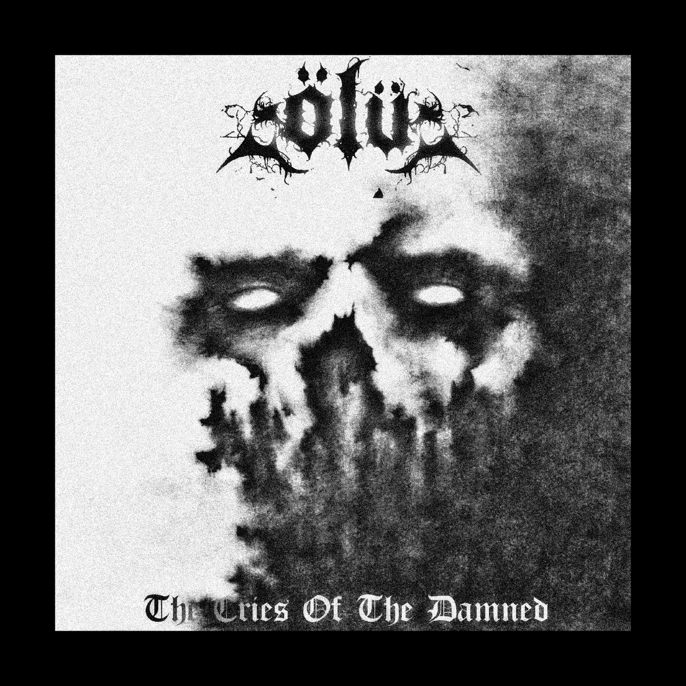

black metal · raw · pure black metal
From the ruins of Istanbul, Ölü unleash The Cries Of The Damned as a document of collapse. This is black metal stripped of ornament, driven by repetition, abrasion, and suffocation. Guitars burn in long, decaying wounds of sound while the drums march with mechanical resolve, dragging every movement toward extinction.
The title track stands as the axis of the release. Five minutes of slow disintegration where despair is not expressed but imposed. Vocals surface as distant invocations, smothered in static and ash, less voice than presence. There is no release. There is no ascent. Only erosion.
Across No Salvation and Skulls In The Ashes, Ölü maintain a discipline rooted in refusal. No excess. No flourish. No concession. Each composition turns inward, circling itself like a rite etched into stone. The record does not perform suffering. It inhabits it.
The Cries Of The Damned does not seek to evolve the form. It preserves the wound. Black metal as endurance. As ruin. As the final breath that never leaves the body.